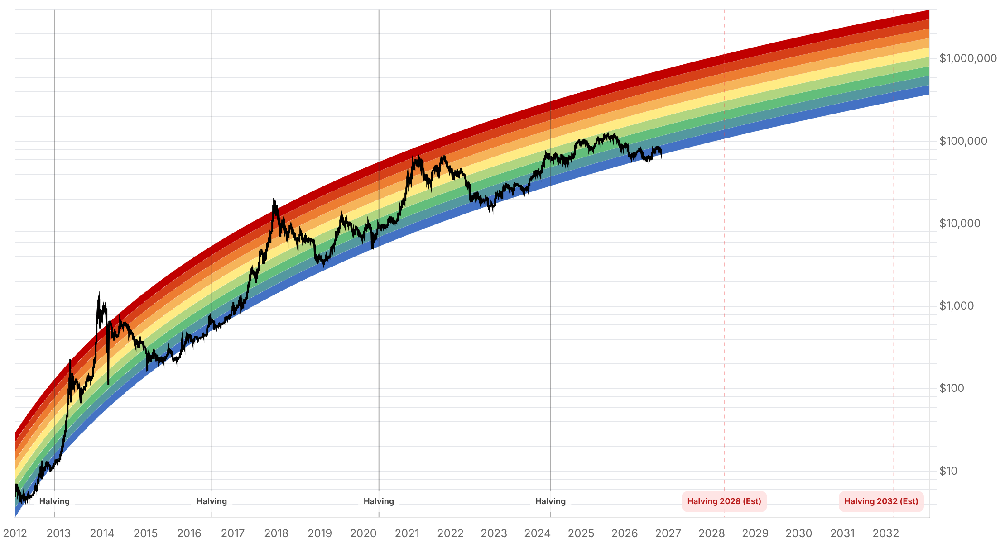

Reporte financiero
BTC cotiza en vivo a USD 77.951,10 (07:16 UTC, +0,79% intradía vs. cierre previo de USD 77.338,23), recuperando con fuerza tras tocar un mínimo de varios meses de ~USD 75.700-75.740 durante la madrugada, en la noche de las elecciones de medio término de EE.UU. Lo nuevo desde el reporte de ayer (3 de noviembre, cuando BTC cotizaba en USD 76.486,11): entre las 21:45 UTC del martes y las 03:10 UTC del miércoles, BTC cayó desde ~USD 77.970 hasta el mínimo de ~USD 75.740 -unos cinco minutos antes de que CBS News proyectara que los demócratas retenían el control de la Cámara de Representantes-, para luego recuperarse por completo y superar los niveles de ayer. Kalshi daba esta madrugada un 99% de probabilidad a que los demócratas también retuvieran el control del Senado, aunque ese resultado no estaba formalmente confirmado al momento de escribir. La caída y posterior rebote coincidieron con una toma de riesgo más amplia: futuros del Nasdaq 100 cayeron ~2% y del S&P 500 ~1,1% (CNBC), y el Kobeissi Letter señaló que el S&P 500 encaminaba a abrir por debajo de 7.500 puntos por primera vez desde el 31 de julio. El temor de fondo es regulatorio: un Congreso con mayoría demócrata reabre la posibilidad de mayor escrutinio sobre cripto -el trader Scott Melker ironizó en redes sobre 'despertar con Maxine Waters' presidiendo el Comité de Servicios Financieros de la Cámara y Elizabeth Warren liderando el Comité Bancario del Senado- y de que la Clarity Act, que ya no superó una moción de cierre de debate en el Senado el 15 de septiembre (49 votos a favor, 50 en contra, por el estancamiento en torno a cláusulas de ética sobre los vínculos cripto de funcionarios electos), siga sin avanzar. Jaret Seiberg (TD Cowen) había anticipado antes de la elección que los demócratas exigirían detalles sobre si gobiernos extranjeros o intereses de negocios usaron compras de tokens para ganar favores con el entorno de Trump, y que no esperaba cooperación de la familia o la administración Trump con esas investigaciones. En contraste, Tom Lee (Fundstrat) sostuvo que incluso con control total del Congreso los demócratas 'no pueden aprobar' legislación anti-cripto o anti-IA mientras el presidente mantenga poder de veto. Las cifras de liquidaciones y flujos de ETFs son contradictorias entre fuentes: Sunday Guardian reportó ~USD 366 millones en liquidaciones de derivados (mayormente posiciones largas sobreapalancadas) y una salida neta de USD 643 millones en ETFs spot de bitcoin en un solo día (la mayor desde junio, sin desglose por emisor); Bitcoin.com, en cambio, citó un umbral de liquidación de USD 450 millones en el nivel de USD 76.200 (que habría sido superado) y salidas de ETFs spot de bitcoin por más de USD 1.040 millones acumuladas en dos sesiones -ninguna de las dos fuentes identifica un proveedor de datos primario ni desglosa por emisor (ej. IBIT de BlackRock), por lo que ambas cifras se reportan con esa salvedad. Como contrapeso histórico, CryptoQuant señaló que BTC cotizó más alto doce meses después de cada elección de medio término desde 2010 (4 de 4), con una ganancia mediana del 63%, aunque advirtió que ese patrón se superpone con el ciclo de halving. El Fear & Greed Index mejora de 26 (ayer) a 34 hoy, reflejando la recuperación del precio pero permaneciendo en zona de 'Fear'. Sin novedades verificadas desde ayer en: la vulnerabilidad de BTCPay Server 2.4.7 (sin reportes de nuevos drenajes), la resolución del Pleno del PCCh, el movimiento de fondos del hackeo de Binance en Tron, la venta de la ballena de Solana, la decisión de MSCI sobre Strategy (sigue pendiente para el 11 de noviembre), la apelación del fallo del Reino Unido sobre los 61.000 BTC (sigue proyectada para 2027) y la respuesta de Cantor Fitzgerald al requerimiento del senador Blumenthal (el plazo del 23 de octubre ya pasó sin respuesta pública reportada).
Entre las 21:45 UTC del martes 3 de noviembre y las 03:10-04:10 UTC del miércoles 4, BTC cayó desde ~USD 77.970-78.000 hasta un mínimo de ~USD 75.700-75.740 (mínimo de varios meses), coincidiendo con el conteo de las elecciones de medio término de EE.UU. Según Bitcoin.com, el mínimo se alcanzó apenas minutos antes de que las proyecciones confirmaran que los demócratas retenían el control de la Cámara de Representantes; el Senado no estaba formalmente definido en ese momento, aunque Kalshi asignaba 99% de probabilidad a que los demócratas también lo retuvieran. El precio se recuperó con fuerza después: la cotización en vivo de esta mañana (07:16 UTC) es de USD 77.951,10, por encima tanto del cierre de ayer (USD 77.338,23) como del nivel en vivo reportado ayer en este mismo reporte (USD 76.486,11). El promedio móvil de 100 días está en ~USD 76.663 y el de 200 días en ~USD 73.163, según CoinGecko/CryptoTicker.
La preocupación de mercado no es solo el resultado electoral en sí, sino sus implicancias regulatorias. El trader Scott Melker ironizó en redes sociales sobre 'imagine waking up to Maxine Waters' (imaginate despertar con Maxine Waters) presidiendo el Comité de Servicios Financieros de la Cámara y Elizabeth Warren liderando el Comité Bancario del Senado -ambas conocidas por posturas críticas hacia la industria cripto-. Antes de la elección, Jaret Seiberg (analista de TD Cowen en Washington) ya había anticipado que 'Democrats are going to demand details on whether foreign governments and business interests used token purchases to curry favor with Team Trump' ('los demócratas van a exigir detalles sobre si gobiernos extranjeros e intereses de negocios usaron compras de tokens para ganar favores con el entorno de Trump'), agregando que 'we also do not expect the Trump family or the Trump administration to cooperate with any Democratic investigations' ('tampoco esperamos que la familia Trump o la administración Trump cooperen con ninguna investigación demócrata'). Seiberg había proyectado además que un Senado demócrata podría frenar la Clarity Act hasta después de las elecciones, con 2027 como ventana más realista para su aprobación final. Esto se suma a que la Clarity Act ya no logró superar una moción de cierre de debate en el Senado el 15 de septiembre (49 votos a favor, 50 en contra), bloqueada por demócratas -y al menos un republicano- que exigían cláusulas de ética sobre los vínculos cripto de funcionarios electos antes de respaldarla. En contraste, Tom Lee (Fundstrat) relativizó el riesgo: incluso con control total del Congreso, los demócratas 'still can't pass' ('todavía no pueden aprobar') legislación anti-cripto o anti-IA mientras el presidente mantenga poder de veto.
Dos fuentes dan cifras distintas y no reconciliadas. Sunday Guardian reporta ~USD 366 millones en liquidaciones de derivados (mayormente posiciones largas sobreapalancadas) y una salida neta de USD 643 millones en ETFs spot de bitcoin en una sola sesión, calificada como la mayor salida institucional desde junio -sin nombrar el emisor ni la fuente primaria de los datos-. Bitcoin.com, en cambio, menciona un umbral de USD 450 millones en liquidaciones de posiciones largas que se activaría si el precio caía a USD 76.200 (nivel que, según el propio artículo, ya fue superado a la baja) y salidas acumuladas de más de USD 1.040 millones en ETFs spot de bitcoin a lo largo de dos sesiones. Ninguna de las dos notas cita una fuente primaria verificable (ej. Coinglass para liquidaciones, o datos de flujo por emisor tipo Farside/BlackRock IBIT), por lo que ambas cifras se presentan aquí con esa salvedad explícita en vez de elegir una.
CryptoQuant señaló que, en los cuatro ciclos de elecciones de medio término desde 2010, Bitcoin cotizó más alto doce meses después en los cuatro casos, con una ganancia mediana del 63%. La propia firma advirtió que esta correlación se superpone con el ciclo de halving de Bitcoin, por lo que no debe leerse como una relación causal directa con el resultado electoral en sí.
La decisión final de MSCI sobre si excluir a Strategy de sus índices sigue pendiente para el 11 de noviembre (entrada en vigor tras el cierre del 30 de noviembre); no se encontró información que adelante el resultado. La apelación de las víctimas chinas sobre el fallo que determina qué ley (china o británica) rige el destino de los 61.000 BTC sigue proyectada para 2027, sin audiencia nueva reportada. El plazo del 23 de octubre para que Cantor Fitzgerald respondiera al requerimiento de documentos del senador Blumenthal sobre sus vínculos con Tether ya pasó sin que se encontrara una respuesta pública. No se hallaron reportes de nuevos drenajes vinculados a la vulnerabilidad de BTCPay Server corregida en la versión 2.4.7, ni actualizaciones sobre el movimiento de fondos del hackeo de Binance en la red Tron, la venta de la ballena de Solana, o la resolución del Quinto Pleno del PCCh contra la corrupción vinculada a cripto -todos temas cubiertos en el reporte de ayer.
| Periodo | Valor |
|---|---|
| 29 oct | 77775.11 |
| 30 oct | 77198.21 |
| 31 oct | 77434.75 |
| 1 nov | 78248.45 |
| 2 nov | 76677.3 |
| 3 nov | 77345.05 |
| 4 nov (en vivo) | 77951.1 |
| Periodo | Valor |
|---|---|
| Hoy | 34 |

“Democrats are going to demand details on whether foreign governments and business interests used token purchases to curry favor with Team Trump. We also do not expect the Trump family or the Trump administration to cooperate with any Democratic investigations.”
“Still can't pass anti-crypto or anti-AI legislation -the president holds the veto.”
El mercado ya digirió el peor escenario inmediato de la noche electoral -el mínimo de ~USD 75.700-75.740- y recuperó con fuerza hasta USD 77.951,10 en vivo, con el Fear & Greed Index subiendo de 26 a 34. El riesgo de corto plazo pasa ahora de lo electoral en sí a sus implicancias regulatorias: si el Senado confirma control demócrata (99% según Kalshi esta madrugada, aún no formalizado) y qué margen de maniobra regulatoria asumen Maxine Waters y Elizabeth Warren al frente de los comités financieros clave.
La Clarity Act, ya trabada desde el 15 de septiembre por una moción de cierre de debate que no alcanzó los votos (49 a 50) por disputas de ética, enfrenta ahora un obstáculo adicional si los demócratas ganan influencia en ambas cámaras -TD Cowen ya proyectaba antes de la elección una ventana más realista de aprobación en 2027. La decisión de MSCI sobre Strategy (11 de noviembre, vigente desde el 30) sigue como el otro frente de riesgo pendiente para MSTR como proxy de Bitcoin, sin cambios desde ayer.
El contrapeso histórico de CryptoQuant (BTC más alto doce meses después de las cuatro elecciones de medio término desde 2010, ganancia mediana 63%, aunque superpuesto al ciclo de halving) y la postura de Tom Lee sobre el límite que impone el veto presidencial a legislación anti-cripto sugieren que el riesgo regulatorio de un Congreso demócrata, aunque real, podría ser más acotado de lo que el mercado temió durante la madrugada. Sin cambios en los objetivos de precio de largo plazo ya reportados en ediciones anteriores (Citigroup, Bernstein, Standard Chartered, Tom Lee, NYDIG, Armstrong).
El mínimo de ~USD 75.700-75.740 ya quedó atrás con una recuperación completa en pocas horas. El riesgo regulatorio real (composición de comités, ritmo de la Clarity Act) se definirá en semanas, no en la madrugada posterior a la elección -las cifras de liquidaciones y salidas de ETFs citadas hoy son, además, contradictorias entre fuentes y deben tomarse con cautela hasta que haya datos primarios confiables.
Kalshi daba 99% de probabilidad esta madrugada a que los demócratas retengan también el Senado, pero el resultado no estaba formalmente confirmado. Quién preside el Comité Bancario del Senado y el de Servicios Financieros de la Cámara es más relevante para cripto en el mediano plazo que el resultado electoral en sí.
Sin novedades desde ayer, pero la fecha se acerca: la confirmación o no de la exclusión de Strategy de los índices de MSCI sigue siendo un riesgo específico para quienes tengan exposición a MSTR como proxy de Bitcoin, independiente del precio de BTC en sí.